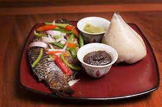
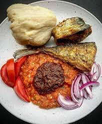

Jollof Rice

Ghana’s famous spiced rice dish, often served at celebrations and gatherings.
Banku & Tilapia
Traditional fermented corn and cassava dough served with grilled tilapia and soup.
Kenkey & Fish
Fermented maize dough usually served with fried fish, pepper sauce, and shito.
Street Life
Experience bustling markets, colorful attire, and everyday Ghanaian culture.